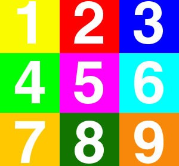
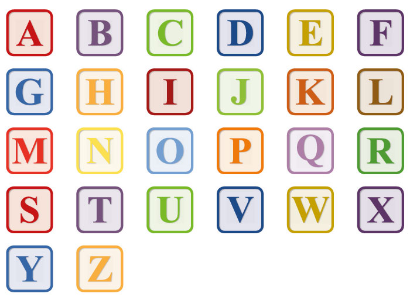

El alfabeto o abecedario de una lengua o idioma es el conjunto ordenado de sus letras. Es también la agrupación que se lee con un orden determinado de las grafías utilizadas para representar el lenguaje que sirve de sistema de comunicación. Algunas letras pueden recibir uno o varios signos diacríticos con el fin de diferenciar los sonidos de la lengua o poder evitar las ambigüedades. De la misma forma, el alfabeto puede ser entendido por el uso de letras suplementarias. Las evoluciones fonéticas de una lengua se crean a un ritmo diferente de la evolución escrita. La escritura alfabética no garantiza una correspondencia unívoca entre los fonemas y los grafemas.
Un número, en ciencia, es una abstracción que representa una cantidad o una magnitud. En matemáticas un número puede representar una cantidad métrica o más generalmente un elemento de un sistema numérico o un número ordinal que representará una posición dentro de un orden de una serie determinada. Los números complejos se usan como una herramienta útil para resolver problemas algebraicos y que algebraicamente son un mero añadido a los números reales, que a su vez ampliaron el concepto de número ordinal. Sobre todo, un número real resuelve el problema de comparación de dos medidas, tanto si son conmensurables como inconmensurables. Ejemplo: el lado de un cuadrado es conmensurable con su perímetro, pero el lado del cuadrado con la diagonal del mismo son inconmensurables.
 NUMEROS
 ALFABETO